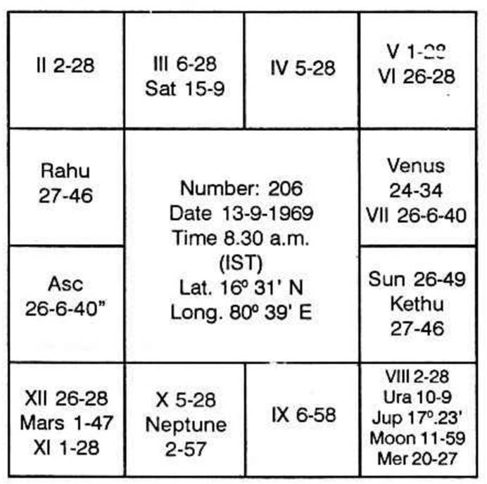
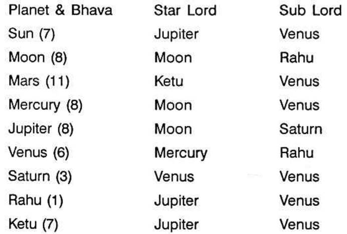

A young man with a keen aptitude for politics wants to know if he would be successful in political ventures. The number furnished by him for analysis is 206.
The question is taken up for analysis at Lat. 16°31' N and Long. 80°39' E on 13-9-1969, 8.30 A.M. I.S.T.
Since the querist has given number 206, the nirayana horary ascendant is the commencement of 206th sub of Krishnamurti Padhdhati. Hence the lagna is Capricorn 26°6'40". Adding 23°20' being Krishnamurti ayanamsa for 1969, we find that the sayana ascendant is Aquarius 19°26'40". The other cusps are obtained from Raphael's Table of Houses as usual. The values given by Raphael are tropical. But, we work with sidereal (nirayana) values. Hence, from each of the sayana cusps, we must deduct Krishnamurti ayanamsa (23°20' for 1969). The following chart shows the different cusps and planetary positions at the moment of analysis.

Balance of Moon Dasa: 8 years; 6 months 5 days.
Rahu represents … Saturn
Ketu represents … Sun

(i) Sun-Ketu.
(ii) Moon-Mercury-Jupiter-Uranus.
The essential qualifications for a successful politician are:
(a) He must be a good orator,
(b) He must be able to tactfully win over masses by meticulously placing before them facts and figures and explaining in detail,
(c) He must win public confidence;
(d) He should have an element of fortune to bless him with popularity and prosperity.
Well-placed Jupiter, Mercury and Mars give oratory capabilities and Saturn gives positions of trust.
For politics, the most auspicious houses are 1, 6, 9, 10 and 11. Why?
Winning over rivals is indicated by house 6 because it is the 12th to 7th (the rivals).
Popularity and prosperity are to be read from houses 10 and 11.
An element of fortune and benefits are shown in houses 1 and 9.
Therefore, if Jupiter, Mercury, Mars and Saturn are strong and signify houses 1, 6, 9, 10 and 11, either jointly or independently, then the querist will be a successful politician.
In the present chart, Jupiter and Mercury are in conjunction, Jupiter owns 11 and Mercury owns 6. Both are in the constellation of Moon, lord of 7 in 8. This indicates victory of opponents.
Lord of 10 Mars is in 11 and in the star of Ketu who is in 7. This shows popularity that gains.
Lord of 1, Saturn is in the star and sub of Venus, who owns 9 and is in 6. By this, the querist will win over his rivals by luck and will be benefitted.
Lord of 9, Venus is in the star of Mercury in 6 and sub of Rahu in 1 indicating gains to opponents.
We therefore find that Mars and Saturn are well placed for politics, Jupiter and Mercury, though apparently well placed, do not promise success.
Saturn signifies 1 (by lordship), 3 (by occupation), 6 and 9 (by position in Venus's star, who owns 9 and is in 6). So, houses 1, 6 and 9 are brought out by Saturn.
Mars signifies 10 (by lordship), 11 (by occupation), 7 (by occupation of Ketu's star), 6 and 9 (by a position in the star of Venus, who owns 9 and is in 6).
So, Mars signifies houses 6, 9, 10 and 11.
Mars and Saturn will bless the querist with success in politics. He can, therefore, go ahead confidently. But look! What is the dasa now running? It is Moon Dasa, Rahu Bhukti. Moon Dasa runs upto 18th March, 1978. Therefore, the querist should not be in haste. He should wait till that date in 1981.
Whenever Mars and Saturn offer a result, it will be at a time when Sun transits Anuradha or Dhanishta star.